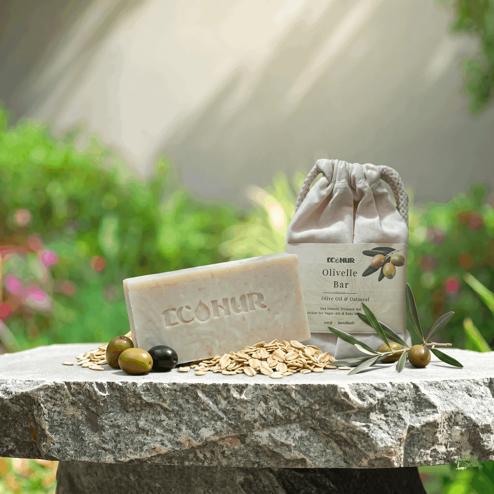

অতিরিক্ত শুষ্ক ত্বক ও শিশুদের জন্য বিশেষভাবে তৈরী
Olivelle Bar বিশেষভাবে তৈরী করা হয়েছে অতিরিক্ত শুষ্ক ত্বক ও শিশুদের জন্য। যাদের ত্বক সহজেই শুষ্ক হয়ে যায়, টানটান অনুভব হয় বা যারা শিশুর জন্য একটি নিরাপদ, সুগন্ধমুক্ত সাবান খুঁজছেন — তাদের জন্য এটি একটি আদর্শ পছন্দ।
এই বারে রয়েছে ৮০% এরও বেশি অলিভ অয়েল, যা ত্বককে গভীরভাবে আর্দ্র রাখে এবং শুষ্কতা থেকে রক্ষা করে। কাওলিন ক্লে অত্যন্ত মৃদুভাবে ত্বক পরিষ্কার করে এবং সিল্কি-স্মুথ অনুভূতি দেয়।
ওট মিল্ক গরম, র্যাশ বা ঘামাচির কারণে হওয়া চুলকানি প্রশমিত করে এবং প্রদাহ কমাতে সাহায্য করে। এটি সম্পূর্ণ সুগন্ধমুক্ত, তাই শিশু এবং অতিরিক্ত সংবেদনশীল ত্বকের জন্যও এটি নিরাপদ।
এই বারের মূল উপাদান অলিভ অয়েল — পরিমাণে ৮০% এরও বেশি। এর অলিক এসিড ত্বকের গভীরে পৌঁছে আর্দ্রতা ধরে রাখে এবং শুষ্কতা প্রতিরোধ করে। অলিভ অয়েলের কন্ডিশনিং ভ্যালু ৮০ এর উপরে।
কাওলিন ক্লে ত্বককে মৃদুভাবে পরিষ্কার করে কোনো রকম কড়াপনা ছাড়াই, এবং ব্যবহারের পর ত্বকে একটি সিল্কি-স্মুথ অনুভূতি রেখে যায়।
ওট মিল্ক ঘামাচি, র্যাশ বা গরমের কারণে হওয়া চুলকানি কমায় এবং ত্বকের প্রদাহ প্রশমিত করতে সাহায্য করে — বিশেষত শিশু ও সংবেদনশীল ত্বকের ক্ষেত্রে।
সম্পূর্ণ সুগন্ধমুক্ত এই ফর্মুলাটি শিশু, অতিরিক্ত শুষ্ক ও সংবেদনশীল ত্বকের কথা মাথায় রেখে তৈরী — যাতে ত্বক শুষ্ক না হয় এবং প্রাকৃতিক আর্দ্রতা বজায় থাকে।
প্রতিটি উপাদান নির্দিষ্ট উদ্দেশ্যে ব্যবহার করা হয়েছে।
শুধুমাত্র বাহ্যিক ব্যবহারের জন্য। চোখে গেলে প্রচুর পানি দিয়ে ধুয়ে ফেলুন। কোনো ধরনের জ্বালা বা অস্বস্তি হলে ব্যবহার বন্ধ করুন। সরাসরি রোদ থেকে দূরে, ঠাণ্ডা ও শুকনো স্থানে সংরক্ষণ করুন।
অতিরিক্ত শুষ্ক ত্বক ও শিশুদের জন্য প্রতিদিনের বিশ্বস্ত ক্লিনজিং বার। অর্ডার করতে সরাসরি WhatsApp এ যোগাযোগ করুন।
Chat on WhatsApp